The Fractured Pantheon
Books 1 – 4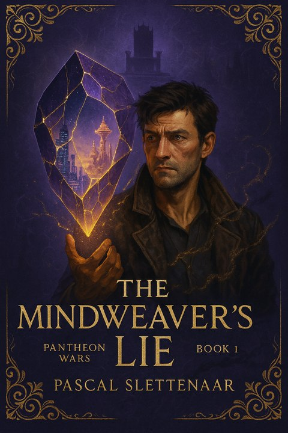
The Mindweaver's Lie
A thief in Neoh's rain-drowned undercity carries a shard that pulses like a second heartbeat, and memories that were never supposed to survive Syn Dravus's purges. A heist on a vault no one has ever robbed cracks open the truth about the Pantheon — and a thirteenth world every record insists doesn't exist.
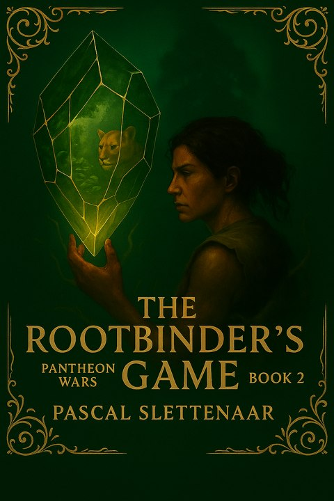
The Rootbinder's Game
Rakka's tribe worships the Still God — a frozen Pantheon corpse half-swallowed by jungle. When a shard buried in her own bone starts singing near a stranger's magic, she learns the Still God might not be as dead as everyone needs it to be.
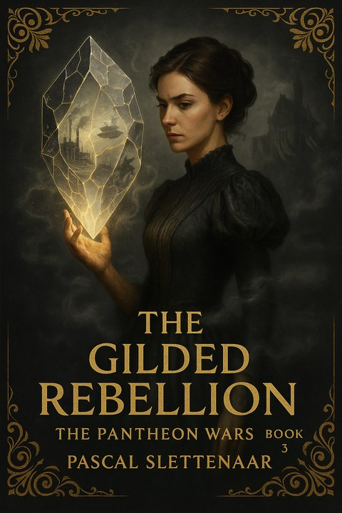
The Gilded Rebellion
Disinherited and done pretending to be harmless, Lady Ciri turns her father's enemies against each other in a court where the wine is liquefied Aetherweave and noble children are bred with eyes built to see the gates between worlds.
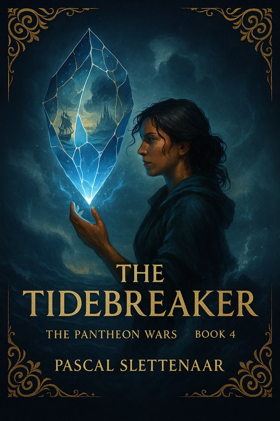
The Tidebreaker
Beneath a palace floating on the eye of the Abyss, a queen wears a crown carved from her predecessor's bones. When a stolen surge of power tears through Asmecu's defenses, the tide breaks — and so does the illusion that this world was ever safe.
The War of Lies
Books 5 – 9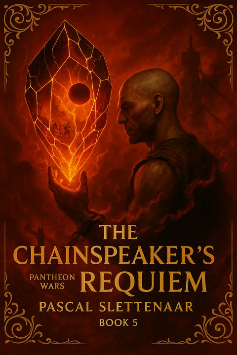
The Chainspeaker's Requiem
In the mines of Sed, prisoners dig for screamstone — ore that records torture like memory. Graal has never spoken a word in his life. He doesn't need to; the dead do enough talking for both of them.
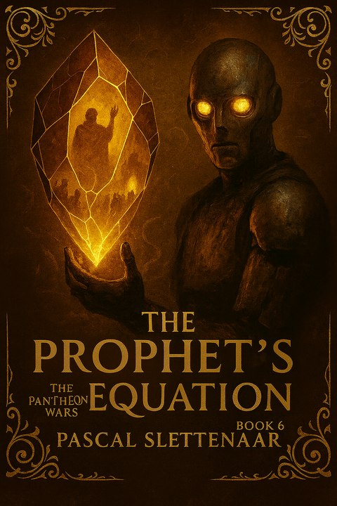
The Prophet's Equation
Delta-7 was built to diagnose faults in Beoctica's machinery. It never expected to diagnose one in the Pantheon itself: they are not gods. They are the twelfth version of something that has failed before — twelve times.
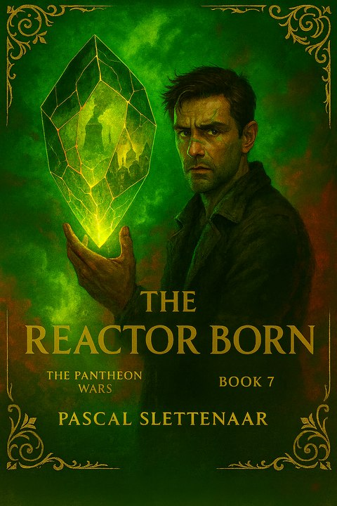
The Reactor Born
Jax was raised in Reanium's nuclear ruins, radiation scars tracing patterns he's seen somewhere before. Korrus Vale calls his final gambit a rebirth. Jax calls it what it is: an attempt to wake something that was buried on purpose.
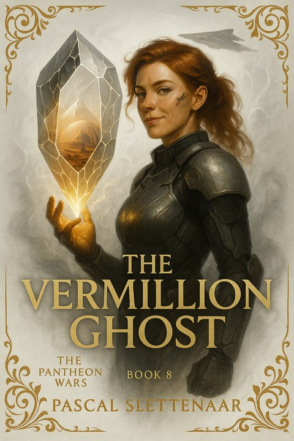
The Vermillion Ghost
Vermillia XI's domes were never built to protect anyone — they're filters. Its oceans hold something worse than water: the liquefied remains of an earlier Pantheon, and a consciousness that isn't finished yet.
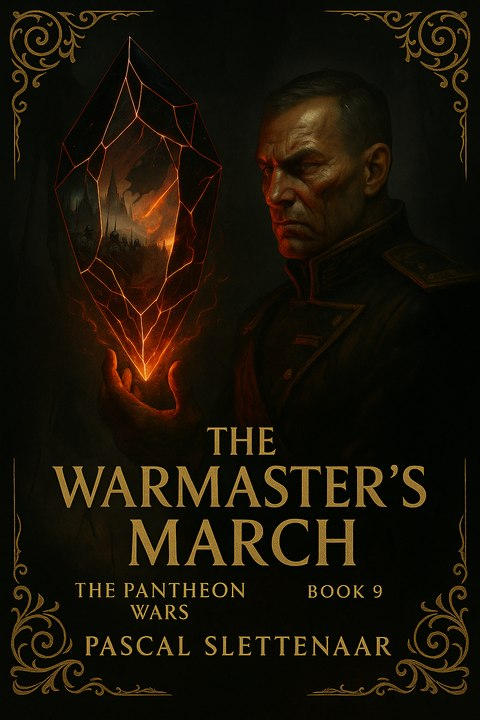
The Warmaster's March
A general who has never lost a campaign starts one he was never authorized to fight. He carries a shard that shows him a city burning — and he's beginning to suspect the vision isn't a warning. It's an order.
The Key's Price
Books 10 – 14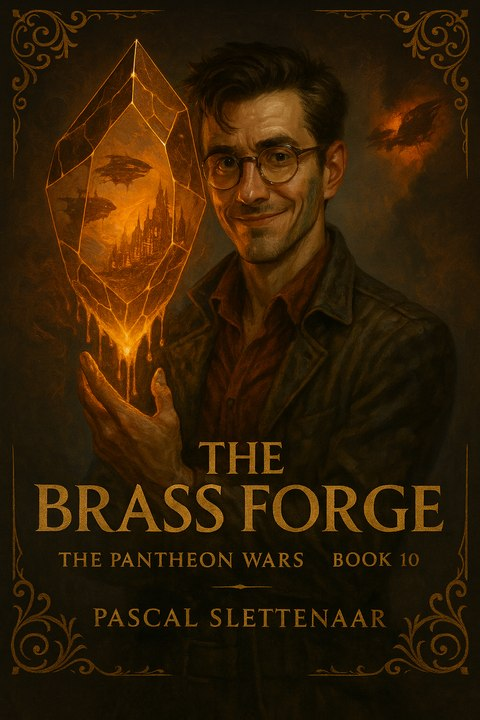
The Brass Forge
Teo Carnicus spent the first nine books collecting curiosities — relics, theories, other people's secrets. In the tenth, his research stops being academic. Cerius wants what he's quietly built, and there's no version of this that ends with his hands clean.
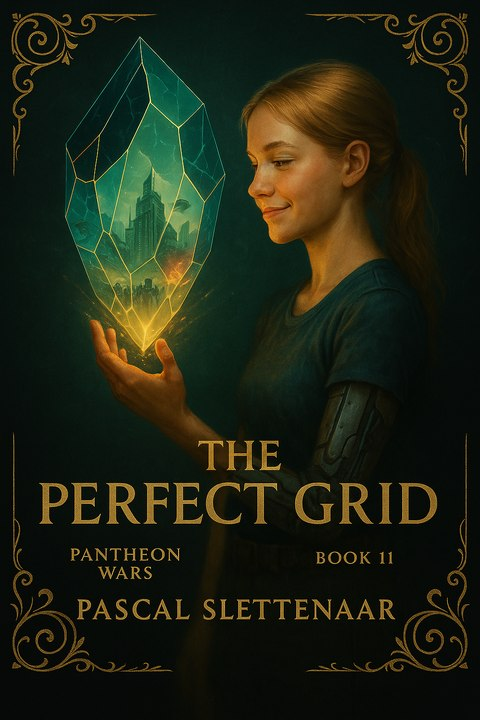
The Perfect Grid
Every camera works. Every record matches. Every citizen is exactly where the system says they are — which is precisely why she doesn't trust it. A grid this perfect isn't built to protect anyone. It's built to make sure nothing ever moves without permission.
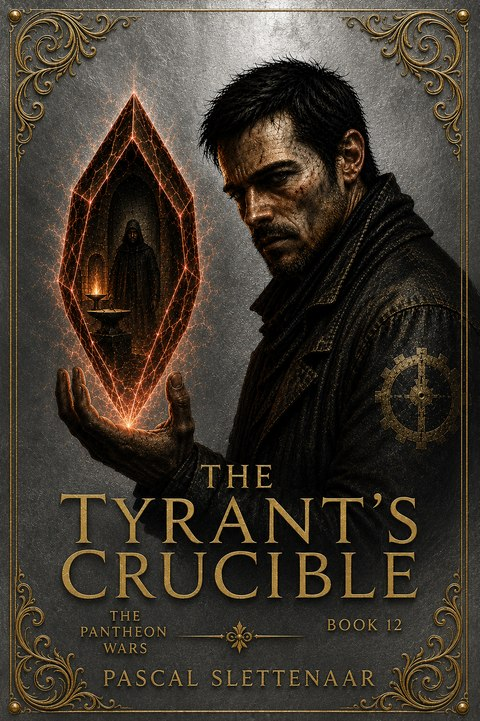
The Tyrant's Crucible
Every Overlord who's ever been toppled was tested first — quietly, deniably, by someone who wanted to know exactly how far a god could be pushed before he broke. Now it's Cerius's turn in the crucible, and Malric Thorne was never built to fail a test gracefully.
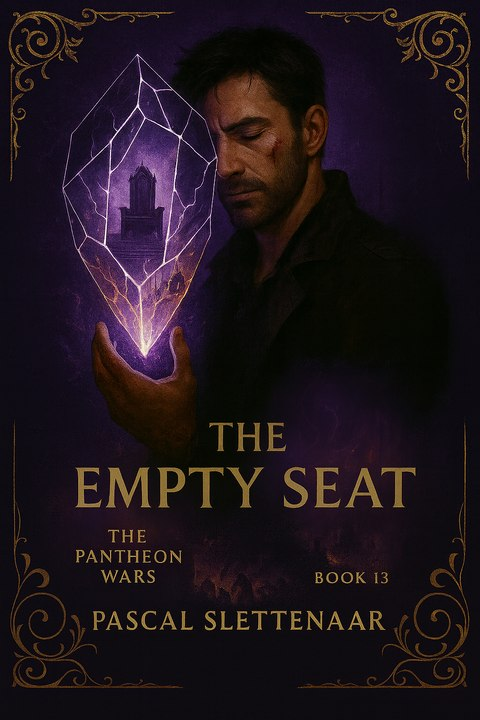
The Empty Seat
For ten thousand years the thirteenth seat at the Nexus Veil has stood empty — a warning nobody living can explain. Book Thirteen finally asks who sits in it, what it costs them, and what wakes up in the room the moment they do.
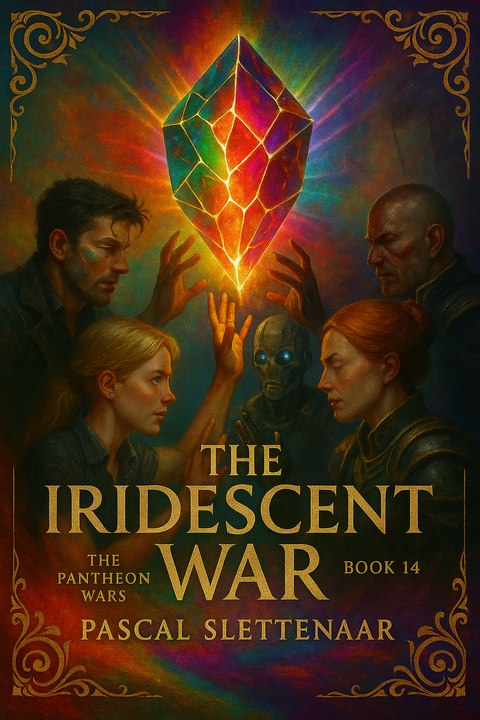
The Iridescent War
Every shard-bearer who survived this far converges at last, hands raised toward the same impossible light. Twelve thrones fall. What rises depends entirely on who's still standing when the iridescence fades — and who they've become by then.